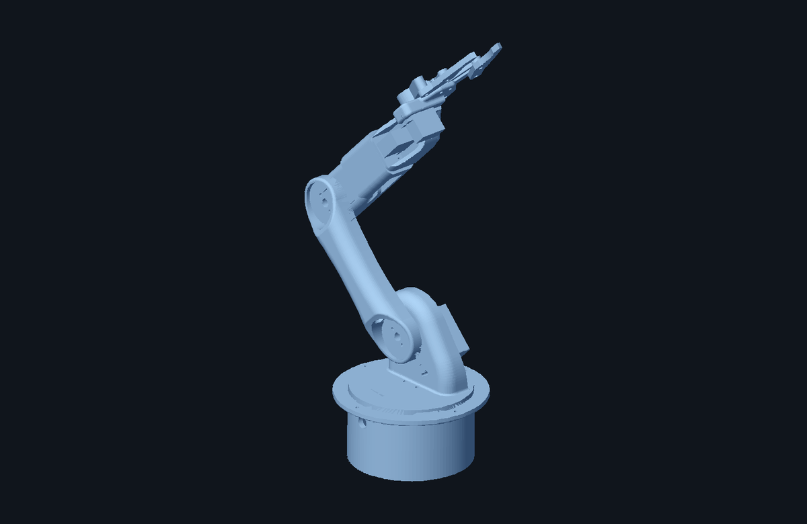
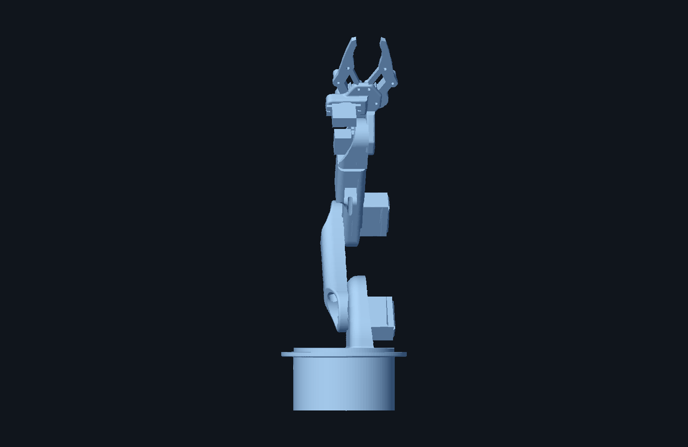
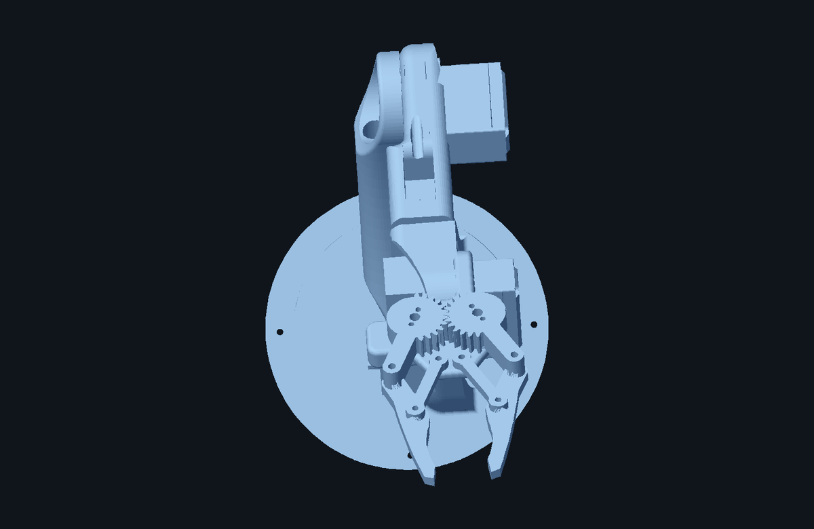

Show side view

Show top view

A custom robotic manipulator in development. These views show the geometry exported from the current CAD model.



Use the CAD joint axes and link offsets to define coordinate frames. Forward kinematics maps a proposed joint configuration to an end-effector pose. Inverse kinematics starts from a requested pose and solves for joint configurations.
Actuator selection and embedded motion control are in progress. Workspace, positioning repeatability and payload are future prototype checks.
The Python renderer reads the triangular faces from the binary STL and projects them onto a view plane. It shades the visible faces using their normals. This is the script used for the three views above.
Install NumPy and Pillow, then run python render_arm.py robotic-arm.stl with both downloads in the same folder.
def read_mesh(path):
"""Load binary STL triangles and centre the mesh at its bounds."""
mesh = path.read_bytes()
if len(mesh) < 84:
raise ValueError("The file is too small to be a binary STL.")
count = struct.unpack_from("<I", mesh, 80)[0]
if not count or len(mesh) != 84 + count * 50:
raise ValueError("The STL triangle count does not match the file length.")
record = np.dtype([
("normal", "<f4", 3),
("vertices", "<f4", (3, 3)),
("attribute", "<u2"),
])
triangles = np.frombuffer(mesh, dtype=record, offset=84)["vertices"].astype(float)
centre = (triangles.max(axis=(0, 1)) + triangles.min(axis=(0, 1))) / 2
return triangles - centre